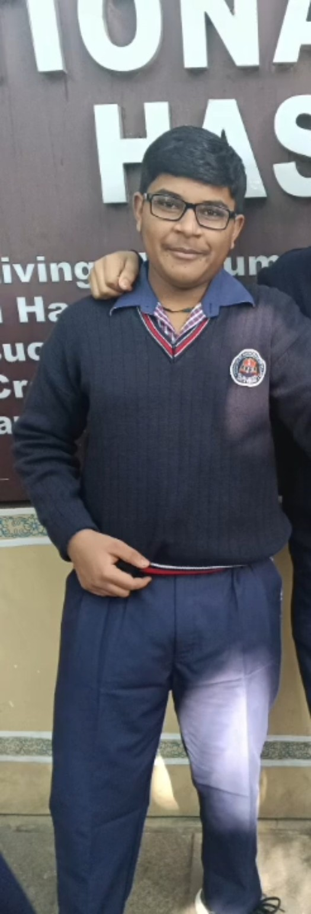
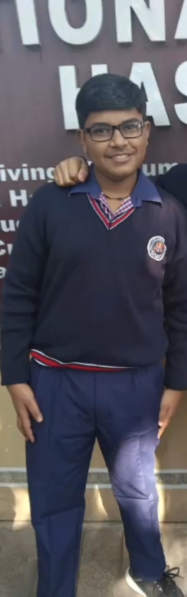
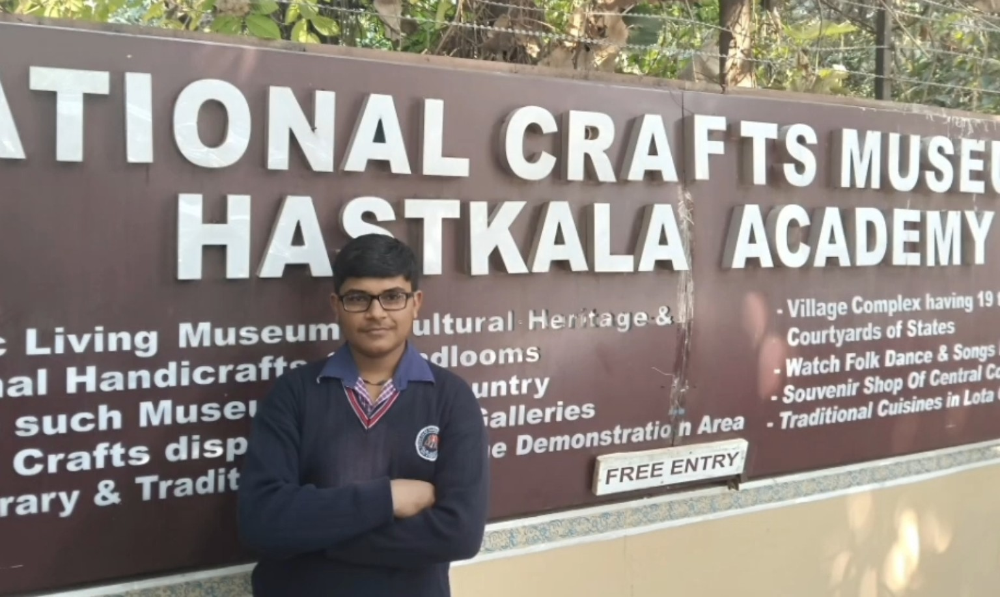
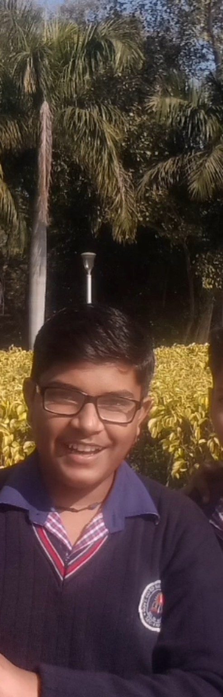

About Me
I'm Aman Ahirwar, a 16‑year‑old Class 11 student studying at DBRA CM Shri School, Sector‑11, Rohini, Delhi, and pursuing JEE preparation through Narayana Coaching (Punjabi Bagh branch). My interests span astronomy, astrophysics, mathematics, technology, reading, and basketball. I enjoy understanding how things work—from the universe and scientific ideas to computers, websites, and the internet. Over the last few years I've explored competitive exams, public speaking, science competitions, books, and programming. My goal is to keep learning, building useful projects, and growing into a person who combines scientific thinking with creativity and curiosity.
Profile
- Age: 16
- Class: 11
- School: DBRA CM Shri School, Sector‑11, Rohini, Delhi
- Coaching: Narayana Coaching, Punjabi Bagh
- Email: akagg9@gmail.com
Gallery




Achievements
- Ranked Top 35 in a state‑level science scholarship examination.
- Participated in IOQM.
- Won multiple school‑level science competitions.
- Won school quizzes and delivered many speeches.
Interests & Skills
Interests: Astronomy, Astrophysics, Mathematics, Reading, Basketball
Skills: Computing, Social Media Management
Books Read
- The Alchemist — Paulo Coelho
- How to Win Friends and Influence People — Dale Carnegie
- Warmth — Rithvik Singh
Projects
- Personal Portfolio Website
Journey Timeline
2024 — Learned about competitive exams and strategies; achieved 35th rank in a state scholarship exam.
2024 — Attended Students Conclave at JLN Stadium.
2025 — Won school essay and quiz competitions.
2025 — Explored the internet from a broader perspective and discovered new interests.
2025 — Got first smartphone.
2026 — Scored 87.4% in Class 10 Boards.
2026 — Got first PC.
2026 — Started reading books regularly.
2026 — Read The Alchemist and Warmth.
2026 — Started watching CS50 lectures.
2026 — Began preparation for JEE 2028.
“Everything you can imagine is real.” — Pablo Picasso